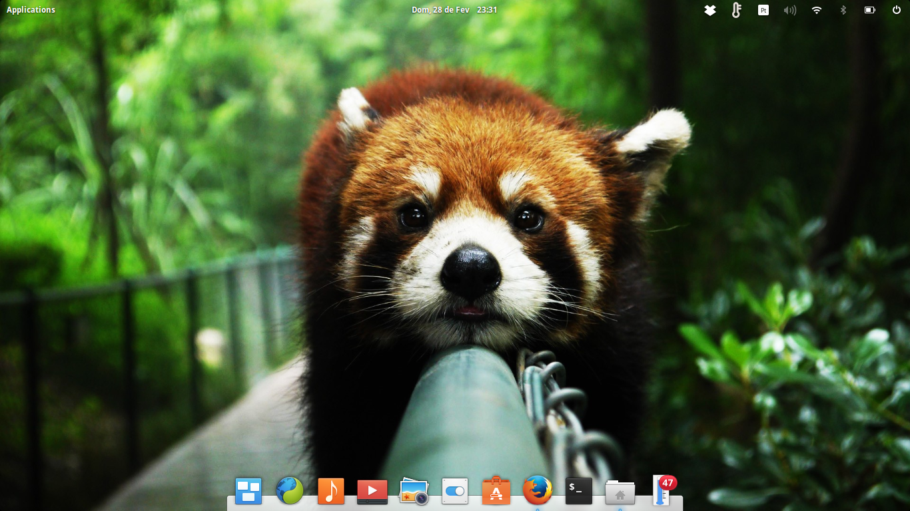
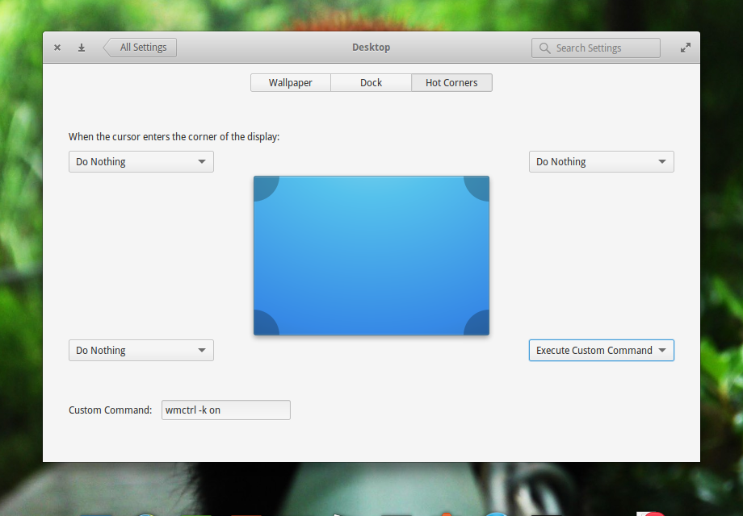
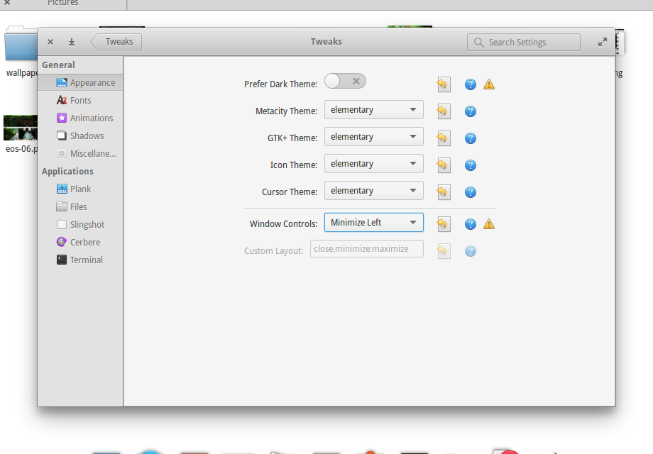
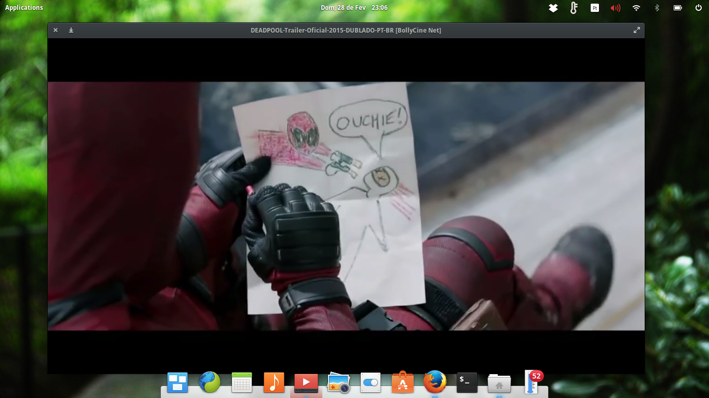
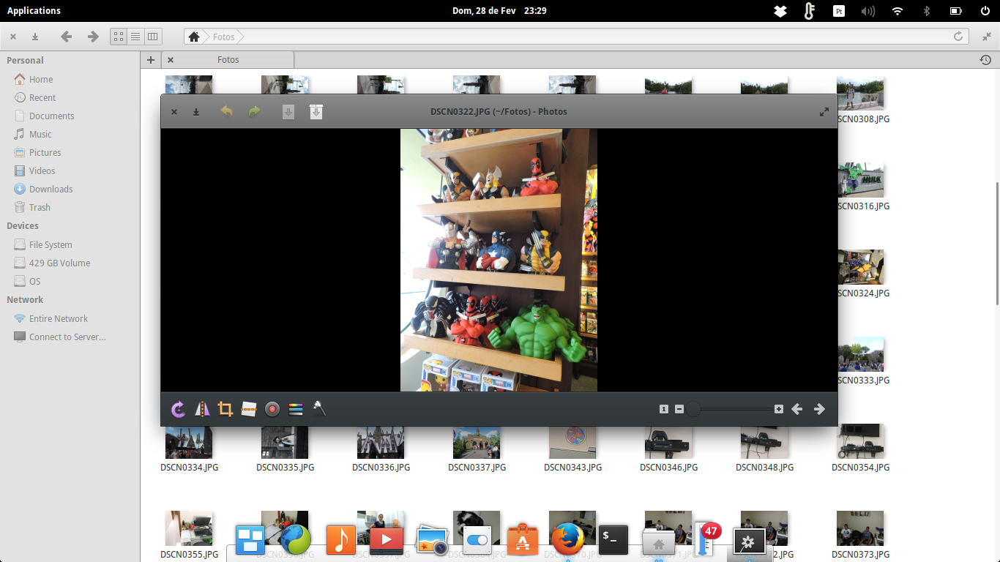
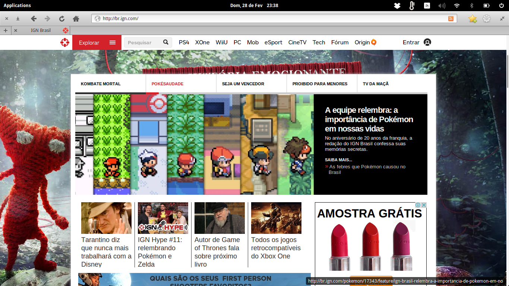
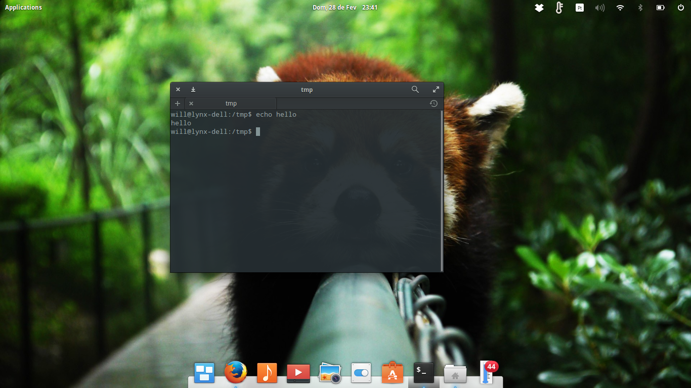
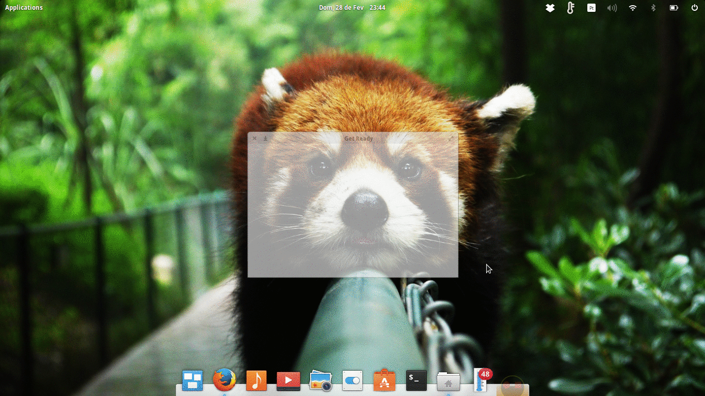
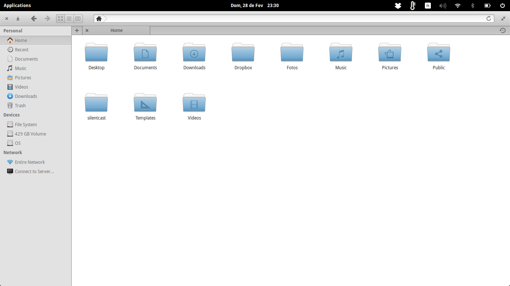

Meu linux, minha vida!
Durante algum tempo fui um usuário Linux casual e cheguei a utilizar distribuições como Red Hat 5.0, Conectiva, Mandrake e acabei gostando do Slackware, pois foi a única distribuição que consegui instalar minha placa de vídeo NVidia Geforce MX e rodar meu bom e velho Counter-Strike com o Wine.
Por ser um usuário Newbie, a minha vida no Slackware foi sofrida, não existiam muitos pacotes disponíveis e a solução era compilar o source com o script conhecido.
./configure
make
make install
Este processo certamente fica cansativo, se você procura um sistema operacional Desktop, claro o Slackware foi criado originalmente para servidores rs.
Por que o eOS ?
O design foi o que chamou minha atenção, bem parecido com OSx Style e para melhorar é baseado no Ubuntu, isto facilita a vida, pois existem muitos pacotes Debian disponíveis e repositórios não oficiais caso seja necessário.

Basicamente o tema padrão do Elementary OS já chama muita atenção, pela perfeição no Design.
Exibir desktop
Durante a utilização faltou um recurso conhecido para um usuário Windows o Exibir a área de trabalho.
Para solucionar este problema será necessário instalar o pacote wmctrl.
sudo apt-get install wmctrl
Após a instalação abra o System Settings e navegue por Desktop > Hot Corners.
Os Hot Corners são atalhos que podem ser acessados no canto da tela
Escolhi o canto inferior direto para exibir o desktop, selecione a opção Execute Custom Command e insira o comando abaixo no campo Custom Command.
wmctrl -k on

Papeis de parede
Os papeis de parede devem ser movidos para a pasta abaixo:
/usr/share/backgrounds
Tweaks
O Elementary Tweaks é necessário para customizar sua experiência desktop no sistema operacional.
sudo add-apt-repository ppa:mpstark/elementary-tweaks-daily
sudo apt-get update
sudo apt-get install elementary-tweaks
Após a instalação abra o Tweaks no menu Applications e no campo Window Controls, selecione a opção Minimize Left para habilitar a opção minimizar.

Games
Existem jogos na Steam que são compatíveis com o Linux. É possível rodar uma lista de aplicações Windows graças ao pacote PlayOnLinux, eu consegui rodar o Counter-Strike tranquilamente e sem tela azul do Windows rs.
- Instalando o PlayOnLinx:
wget -q "http://deb.playonlinux.com/public.gpg" -O- | sudo apt-key add -
sudo wget http://deb.playonlinux.com/playonlinux_precise.list -O /etc/apt/sources.list.d/playonlinux.list
sudo apt-get update
sudo apt-get install playonlinux
Agora instale o Steam
sudo apt-get install steam
Bugs
Encontrei alguns crashs durante a navegação pelo Midori e o Nautiuls, nada que impossibilita a utilização do sistema operacional, aceitável!
Pronto para instalar ?
É possível instalar o Elementary OS em um pendrive, assim você realiza seu test-drive.
- Utilize o Linux Live Usb Creator
Veja alguns screenshots e tire a sua conclusão.
Vídeos

Além do player padrão você pode utilizar o VLC Player.
sudo apt-get install vlc
Preview de Imagem

Navegação
O Midori é o navegador padrão, bem parecido com Safari.

Apesar da existência do Midori, prefiro o Firefox que é o mais estável no Linux, na minha humilde opinião.
Terminal

O Guake terminal é uma excelente opção que mantém o terminal ativo possibilitando o acesso com a tecla F12.

Para instalar digite o comando abaixo:
sudo apt-get install guake
Gerenciador de arquivos
O gerenciamento de arquivos do Elementary OS segue o padrão Gnome, o Nautilus.
